@KellieMeyerNews
📝 原文: Latest on the fatal ICE-involved shooting in Maine.
🇨🇳 译文: 缅因州 ICE 枪击事件的最新消息。


🕒 2026-07-13T18:43:16+00:00
| 来源 | 旧窗口内数量 | 本次新增 | 本次淘汰 | 当前窗口内共有 |
|---|---|---|---|---|
| 推文 + Dawn 新闻 | 0 | 50 | 0 | 50 |
| ARY News | 0 | 0 | 0 | 0 |
注：淘汰数 = 旧窗口内数量 + 本次新增 - 当前窗口内共有
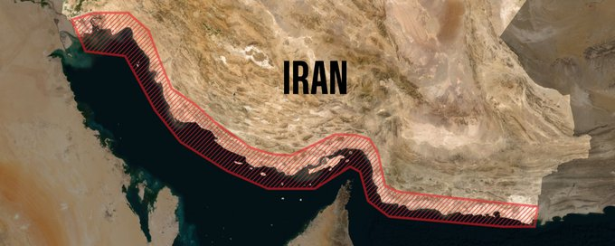
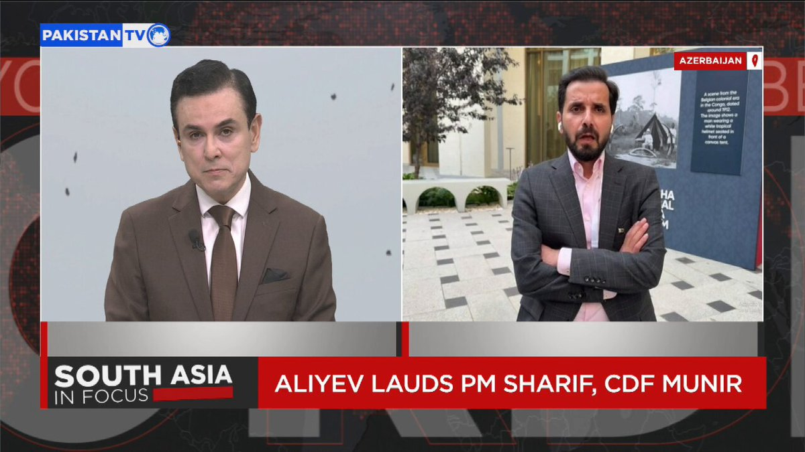

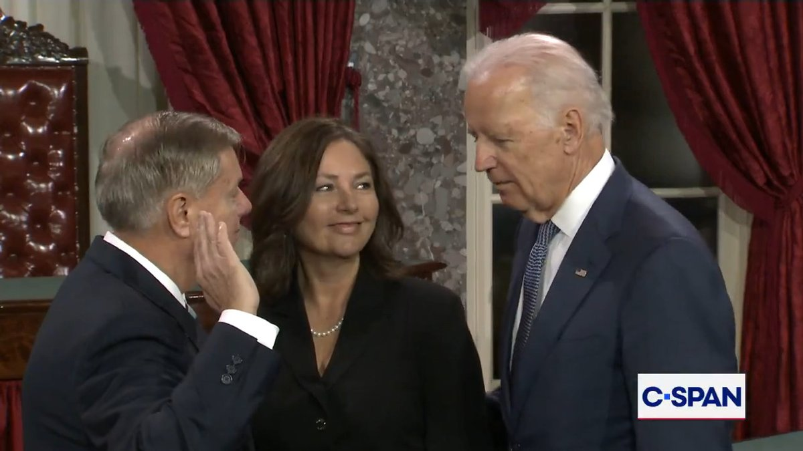
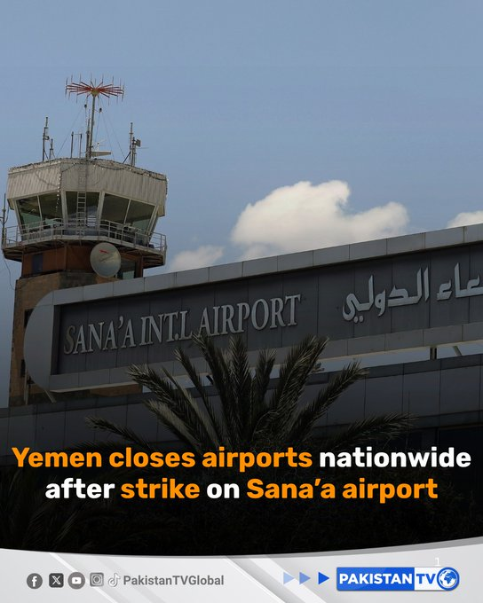
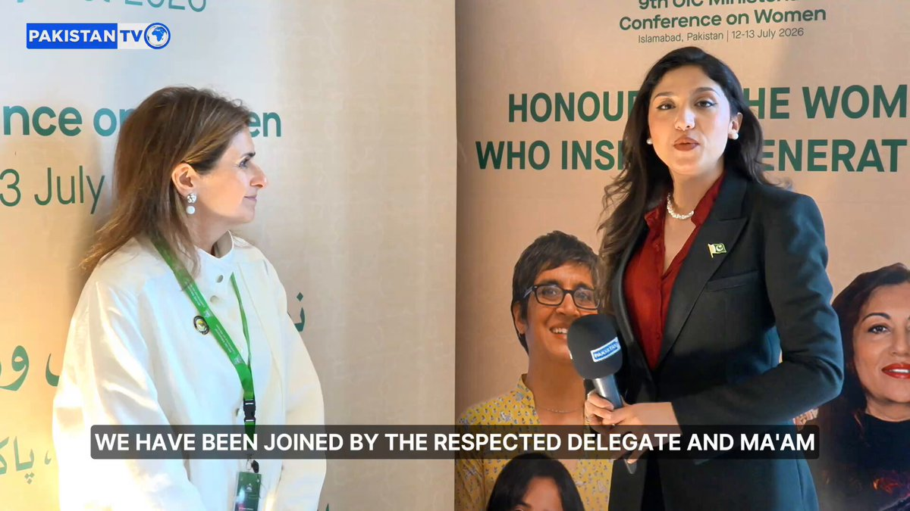


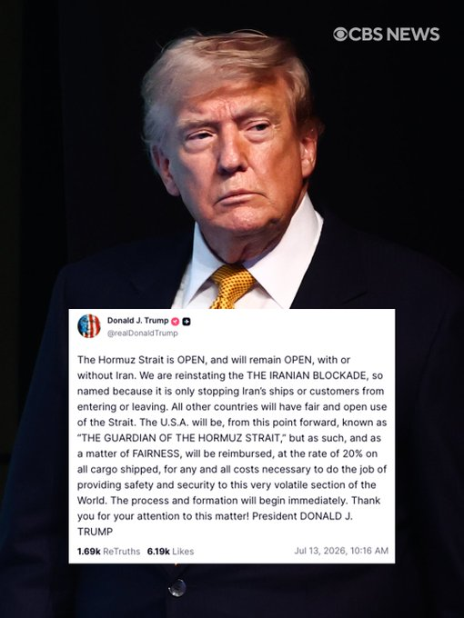
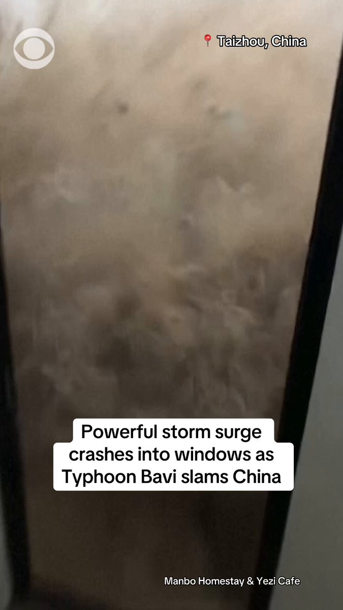


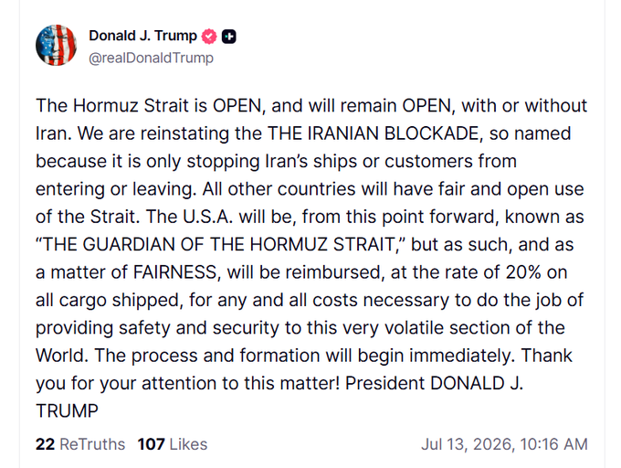
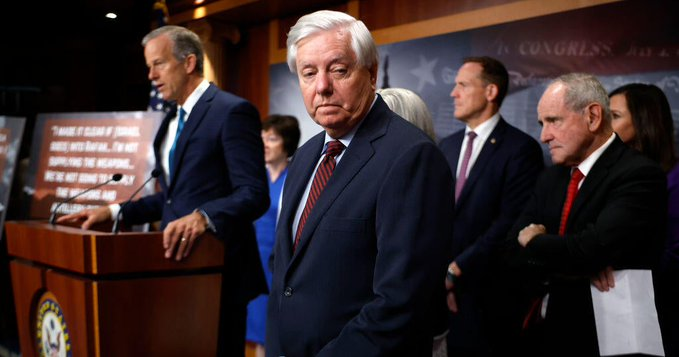


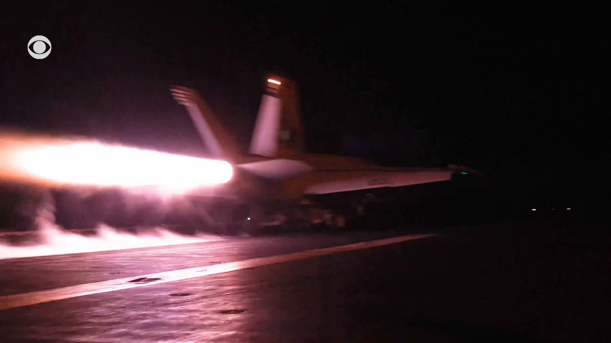

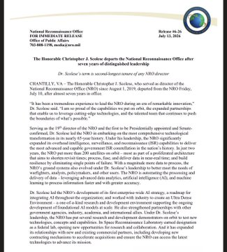
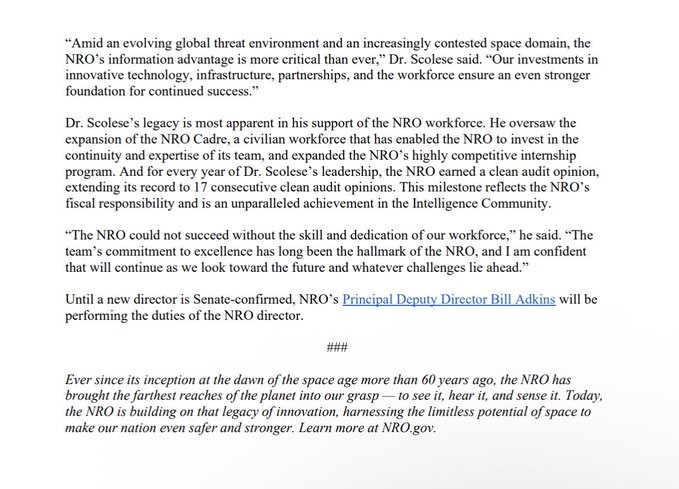


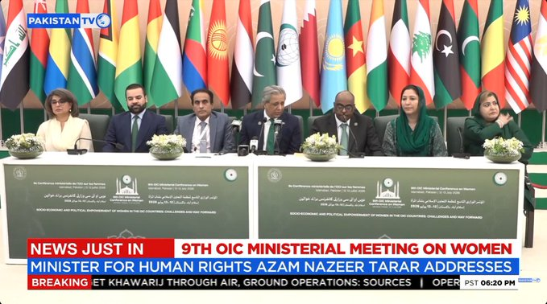
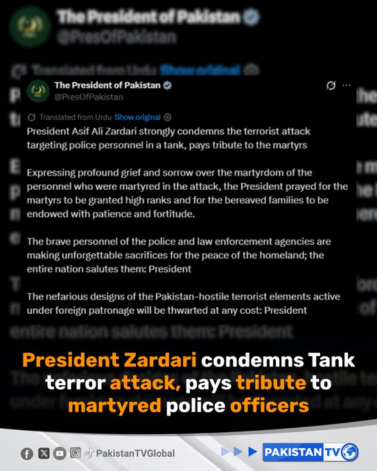
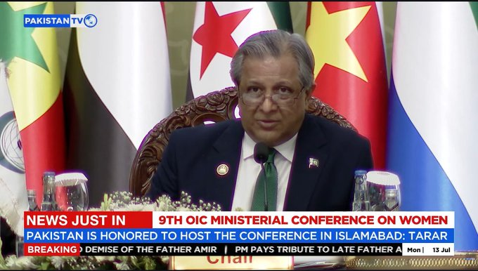


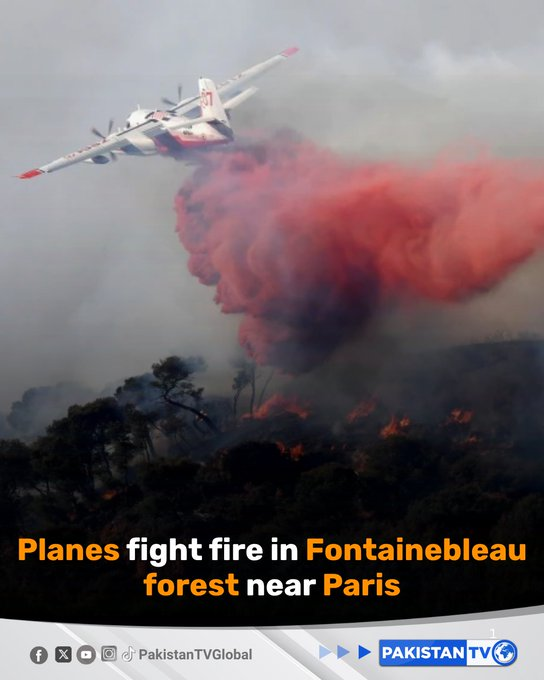


暂无文章。